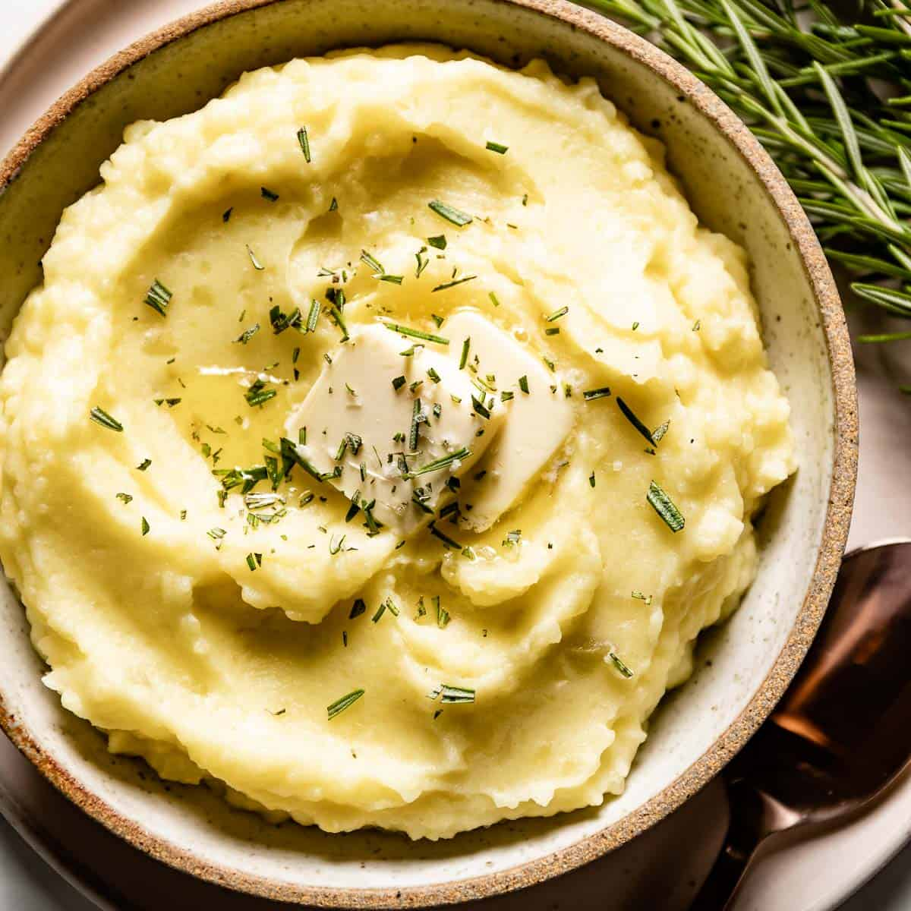

Rosemary Mashed Potatoes

Description
"Here’s a way to style up those basic mashed potatoes into a perfectly-seasoned side dish with rosemary and Parmesan."
Ingredients
- 2 pounds russet potatoes, peeled and cut into 2-inch chunks
- 2/3 cup milk
- 2 tablespoons unsalted butter
- 2 tablespoons fresh rosemary
- 1/3 cup freshly grated Parmesan cheese
- salt and freshly ground black pepper
Steps
- Place potatoes in a large pot and cover with salted water; bring to a boil.
Reduce heat to medium-low and simmer until tender, 15 to 18 minutes.
Drain.
- Meanwhile, heat milk, butter, and rosemary in a small saucepan over low heat until butter is melted.
Set aside.
- Drain potatoes, and return to the pot.
Sprinkle Parmesan over the potatoes and start mashing with a potato masher or an electric mixer.
Gradually pour in milk mixture while continuing to mash.
Season with salt and pepper to taste.